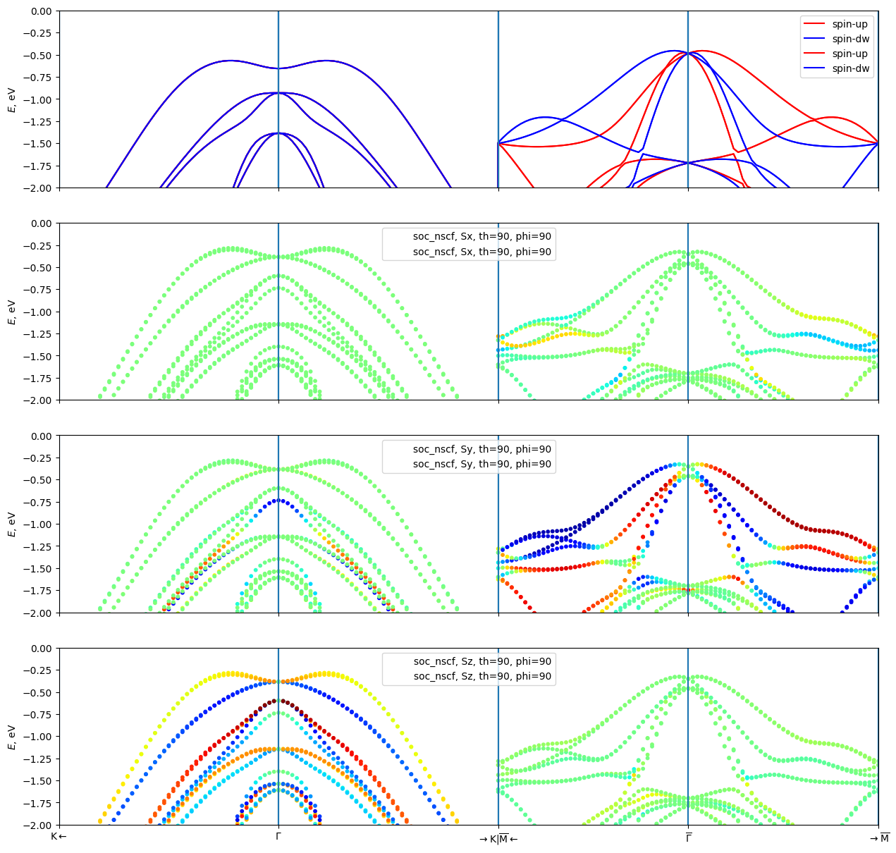

MnTe using Altermagnetic Symmetry
Altermagnets (as well as antiferromagnets) have a nice property, that, unlike Ferromagnets, their spin-up and spin-down channels are related by a symmetry operation. This symmetry may be a rotation (altermagnetic symmetry) or a translation or space inversion (antiferromagnetic symmetry). Therefore, it is not needed to separately wannierise the spin-down channel, it is enough to wannierise the spin-up and apply the symmetry. This tutorial demonstrates ho to do it.
Comppare with the previous tutorial , where the spin-up and spin-down channels were wannierised separately.
[1]:
from sys import stdout
import numpy as np
from ase import Atoms
from gpaw import GPAW, PW, MixerSum
import ray
ray.init(num_cpus=16)
seed = "MnTe"
/home/stepan/storage/github/WannierBerri-tutorial/.conda/lib/python3.12/site-packages/tqdm/auto.py:21: TqdmWarning: IProgress not found. Please update jupyter and ipywidgets. See https://ipywidgets.readthedocs.io/en/stable/user_install.html
from .autonotebook import tqdm as notebook_tqdm
2026-10-16 12:31:04,329 INFO util.py:154 -- Missing packages: ['ipywidgets']. Run `pip install -U ipywidgets`, then restart the notebook server for rich notebook output.
2026-10-16 12:31:11,720 INFO worker.py:2004 -- Started a local Ray instance. View the dashboard at http://127.0.0.1:8266
/home/stepan/storage/github/WannierBerri-tutorial/.conda/lib/python3.12/site-packages/ray/_private/worker.py:2052: FutureWarning: Tip: In future versions of Ray, Ray will no longer override accelerator visible devices env var if num_gpus=0 or num_gpus=None (default). To enable this behavior and turn off this error message, set RAY_ACCEL_ENV_VAR_OVERRIDE_ON_ZERO=0
warnings.warn(
Configure Logging
The new version of WannierBerri has a configurable logging system. See documentation for details. Were we just want to see the output in the notebook, so we modify the console_level
[2]:
from wannierberri.logging import configure_logging
configure_logging(console_level="INFO")
[2]:
<Logger wannierberri (INFO)>
Step 1: Gpaw calculation
THe gpaw calculation is the same as in the previous tutorial, so we skip them here, just loading the results.
[3]:
calc_scf = GPAW(f"gpaw/{seed}-scf.gpw")
calc_nscf = GPAW(f"gpaw/{seed}-nscf-irred-664.gpw")
calc_bands = GPAW(f"gpaw/{seed}-bands-path.gpw")
Step 2: Wannierization
2.1 select projections
In this case we use sp3d2 and t2g projections on each iron atom. One can also use the conventional s,p,d orbitals.
[4]:
from irrep.spacegroup import SpaceGroup
from wannierberri.symmetry.projections import Projection, ProjectionsSet
sg = SpaceGroup.from_gpaw(calc_nscf, include_TR=True)
at_numbers = calc_nscf.atoms.get_atomic_numbers()
at_positions = calc_nscf.atoms.get_scaled_positions()
at_magmom = calc_nscf.get_magnetic_moments()
print (f"Atomic numbers: {at_numbers}")
print (f"Atomic positions: \n {at_positions}")
print (f"Atomic magnetic moments: {at_magmom}")
positions_Mn_up = at_positions[(at_numbers == 25) & (at_magmom > 0)] # Mn atoms with positive magnetic moment
positions_Mn_down = at_positions[(at_numbers == 25) & (at_magmom < 0)] # Mn atoms with negative magnetic moment
positions_Te = at_positions[at_numbers == 52] # Te atoms
print (f"Positions of Mn atoms with positive magnetic moment: {positions_Mn_up}")
print (f"Positions of Mn atoms with negative magnetic moment: {positions_Mn_down}")
print (f"Positions of Te atoms: \n{positions_Te}")
proj_Mn_up_d = Projection(position_num=positions_Mn_up, orbital='d', spacegroup=sg)
proj_Te_sp2 = Projection(position_num=positions_Te, orbital='sp2', spacegroup=sg, xaxis=[0, -1, 0], rotate_basis=True)
proj_Te_pz = Projection(position_num=positions_Te, orbital='pz', spacegroup=sg)
proj_set_up = ProjectionsSet([proj_Mn_up_d, proj_Te_sp2, proj_Te_pz])
Atomic numbers: [25 25 52 52]
Atomic positions:
[[0. 0. 0. ]
[0. 0. 0.5 ]
[0.33333333 0.66666667 0.25 ]
[0.66666667 0.33333333 0.75 ]]
Atomic magnetic moments: [ 4.40436811e+00 -4.40436811e+00 -2.92436707e-10 -2.92437089e-10]
Positions of Mn atoms with positive magnetic moment: [[0. 0. 0.]]
Positions of Mn atoms with negative magnetic moment: [[0. 0. 0.5]]
Positions of Te atoms:
[[0.33333333 0.66666667 0.25 ]
[0.66666667 0.33333333 0.75 ]]
create the “w90 files”
Here we are NOT using the gpaw-wannier90 interface, and actually not creating the w90 files, but directly access the wavefunctions from the GPAW calculation, use symmetry operations from irrep, and create the necessary data to be used with wannierberri. Those files still retain the same naming convention as the w90 files for consistency, but htey are binary npz files, which are convenient to work with numpy
After creating those data, it is written to the disk, so that one can later load it. But be careful - if you change anything (e.g. the projections) - do not forget to remove those files, otherwise you will load the old data! For that reason, here we set ‘read_npz_list=[]’ to force the creation of new data.
[5]:
from wannierberri.w90files.w90data_soc import WannierDataSOC
wandata = WannierDataSOC.from_gpaw(
seedname="wannier_soc_altermagnetic",
calculator=calc_nscf,
projections_up=proj_set_up,
mp_grid=(6, 6, 4),
altermagnetic=True,
)
wandata.to_npz("wannier_soc_altermagnetic")
2026-10-16 12:31:26,657 INFO wannierberri.symmetry.projections: finding num points from 3 projections
2026-10-16 12:31:26,668 INFO wannierberri.symmetry.projections: finding num points from 3 projections
mpgrid = [6 6 4], 24
2026-10-16 12:31:26,675 WARNING wannierberri.w90files.wandata: detected grid (np.int64(6), np.int64(6), np.int64(4)) od 144 kpoints, but only 24 kpoints are available.assuming that only irreducible kpoints are needed.
mpgrid = [6 6 4], 24
2026-10-16 12:31:37,944 INFO wannierberri.w90files.amn: Creating amn. Using projections_set
ProjectionsSet with 13 Wannier functions and 0 free variables
Projection 0.0, 0.0, 0.0:['d'] with 5 Wannier functions (5 per spin x1 spins)
on 1 points (5 per site)
Projection 0.3333333333333334, 0.6666666666666667, 0.25:['sp2'] with 6 Wannier functions (6 per spin x1 spins)
on 2 points (3 per site)
Projection 0.3333333333333334, 0.6666666666666667, 0.25:['pz'] with 2 Wannier functions (2 per spin x1 spins)
on 2 points (1 per site)
2026-10-16 12:31:38,197 INFO wannierberri.w90files.mmn: NK= 144, selected_kpoints = [ 0 1 2 3 4 5 6 7 8 9 10 11 12 13 14 15 16 17 18 19 20 21 22 23], kptirr = [ 0 1 2 3 4 5 6 7 8 9 10 11 12 13 14 15 16 17 18 19 20 21 22 23]
2026-10-16 12:31:38,199 INFO wannierberri.w90files.mmn: Using PAW kpoints for MMN: [array([0., 0., 0.]), array([0. , 0. , 0.25]), array([0. , 0. , 0.5]), array([0. , 0.16666667, 0. ]), array([0. , 0.16666667, 0.25 ]), array([0. , 0.16666667, 0.5 ]), array([0. , 0.16666667, 0.75 ]), array([0. , 0.33333333, 0. ]), array([0. , 0.33333333, 0.25 ]), array([0. , 0.33333333, 0.5 ]), array([0. , 0.33333333, 0.75 ]), array([0. , 0.5, 0. ]), array([0. , 0.5 , 0.25]), array([0. , 0.5, 0.5]), array([0.16666667, 0.16666667, 0. ]), array([0.16666667, 0.16666667, 0.25 ]), array([0.16666667, 0.16666667, 0.5 ]), array([0.16666667, 0.33333333, 0. ]), array([0.16666667, 0.33333333, 0.25 ]), array([0.16666667, 0.33333333, 0.5 ]), array([0.16666667, 0.33333333, 0.75 ]), array([0.33333333, 0.33333333, 0. ]), array([0.33333333, 0.33333333, 0.25 ]), array([0.33333333, 0.33333333, 0.5 ])]
magmom_transformed=array([ 4.40436811e+00, -4.40436811e+00, -2.92436707e-10, -2.92437089e-10]), atommap=array([0, 1, 2, 3]), m-transformed=[ 8.80873621e+00 -8.80873621e+00 -5.84873414e-10 -5.84874178e-10]
magmom_transformed=array([ 4.40436811e+00, -4.40436811e+00, -2.92437089e-10, -2.92436707e-10]), atommap=array([0, 1, 3, 2]), m-transformed=[ 8.80873621e+00 -8.80873621e+00 -5.84873796e-10 -5.84873796e-10]
magmom_transformed=array([-4.40436811e+00, 4.40436811e+00, -2.92437089e-10, -2.92436707e-10]), atommap=array([1, 0, 3, 2]), m-transformed=[-6.36841690e-11 -6.36841690e-11 -5.84873796e-10 -5.84873796e-10]
2026-10-16 12:31:41,773 INFO wannierberri.w90files.io: saving to wannier_soc_altermagnetic.soc.npz :
2026-10-16 12:31:42,339 INFO wannierberri.symmetry.sawf: saving to wannier_soc_altermagnetic-spin-0.sawf.npz :
2026-10-16 12:31:42,398 INFO wannierberri.w90files.io: saving to wannier_soc_altermagnetic-spin-0.bkvec.npz :
2026-10-16 12:31:42,400 INFO wannierberri.w90files.io: saving to wannier_soc_altermagnetic-spin-0.chk.npz :
2026-10-16 12:31:42,402 INFO wannierberri.w90files.io: saving to wannier_soc_altermagnetic-spin-0.eig.npz :
2026-10-16 12:31:42,404 INFO wannierberri.w90files.io: saving to wannier_soc_altermagnetic-spin-0.amn.npz :
2026-10-16 12:31:42,411 INFO wannierberri.w90files.io: saving to wannier_soc_altermagnetic-spin-0.mmn.npz :
Do the wannierization
at this step we also specify the frozen window, number of iterations, and whether to use site symmetry and localization. (when starting from irreducible BZ, site-symmetry is required anyway)
We also may use the outer window via w90data.select_bands if needed
In this case, only the spin-up channel is wannierised (compare with the previous tutorial)
[6]:
wandata.wannierise(
froz_min=-10,
froz_max=7,
outer_min=-10,
outer_max=np.inf,
num_iter=200,
print_progress_every=50,
sitesym=True,
localise=True,
)
2026-10-16 12:32:26,859 WARNING wannierberri.wannierisation.wannierise: The check of irreps is not implemented for anti-unitary symmetries. Skipping the check, leaving to your responsibility
2026-10-16 12:32:26,859 INFO wannierberri.wannierisation.wannierise: Using the Wannier centers from the projections as initial guess
2026-10-16 12:32:26,892 WARNING wannierberri.symmetry.sawf_kirr: symmetrization did not converge in 10 iterations, final changes 0.005566396361527378, 5.182668731547316e-05; probably the input data are not perfectly symmetrizable, or the provided projections are notcompatible with the irreps of the DFT bands.
2026-10-16 12:32:26,950 WARNING wannierberri.symmetry.sawf_kirr: symmetrization did not converge in 10 iterations, final changes 0.005165982698516518, 3.487585752635262e-05; probably the input data are not perfectly symmetrizable, or the provided projections are notcompatible with the irreps of the DFT bands.
2026-10-16 12:32:26,956 WARNING wannierberri.symmetry.sawf_kirr: max error in block 37 [55:56] is 5.692309804988117e-06, exceeding threshold 1e-06, and this is not among the upper bands(56:60) bands, this may indicate inaccuracy in the input data
2026-10-16 12:32:26,956 INFO wannierberri.symmetry.sawf_kirr: Symmetrizer_Uirr initialized for ikirr=1, kpt=1, [0. 0. 0.25] with 12 symmetries, max error in included blocks: 5.692309804988117e-06 ; excluded bands are [56 57 58 59] out of 60 total bands (accuracy threshold 1e-06)
2026-10-16 12:32:26,981 WARNING wannierberri.symmetry.sawf_kirr: max error in block 35 [54:56] is 1.3416494714272144e-06, exceeding threshold 1e-06, and this is not among the upper bands(56:60) bands, this may indicate inaccuracy in the input data
2026-10-16 12:32:26,981 INFO wannierberri.symmetry.sawf_kirr: Symmetrizer_Uirr initialized for ikirr=2, kpt=2, [0. 0. 0.5] with 24 symmetries, max error in included blocks: 1.3416494714272144e-06 ; excluded bands are [] out of 60 total bands (accuracy threshold 1e-06)
2026-10-16 12:32:27,025 WARNING wannierberri.symmetry.sawf_kirr: symmetrization did not converge in 10 iterations, final changes 0.005565785045380235, 0.0005490057022028928; probably the input data are not perfectly symmetrizable, or the provided projections are notcompatible with the irreps of the DFT bands.
2026-10-16 12:32:27,053 WARNING wannierberri.symmetry.sawf_kirr: symmetrization did not converge in 10 iterations, final changes 6.984353060398508e-05, 1.0569656442609607e-05; probably the input data are not perfectly symmetrizable, or the provided projections are notcompatible with the irreps of the DFT bands.
2026-10-16 12:32:27,108 WARNING wannierberri.symmetry.sawf_kirr: symmetrization did not converge in 10 iterations, final changes 0.009276023853958721, 0.0012832004640419745; probably the input data are not perfectly symmetrizable, or the provided projections are notcompatible with the irreps of the DFT bands.
2026-10-16 12:32:27,145 WARNING wannierberri.symmetry.sawf_kirr: symmetrization did not converge in 10 iterations, final changes 0.00012298295645450552, 4.735204160017802e-05; probably the input data are not perfectly symmetrizable, or the provided projections are notcompatible with the irreps of the DFT bands.
2026-10-16 12:32:27,173 WARNING wannierberri.symmetry.sawf_kirr: max error in block 50 [54:55] is 1.508675046338085e-06, exceeding threshold 1e-06, and this is not among the upper bands(56:60) bands, this may indicate inaccuracy in the input data
2026-10-16 12:32:27,174 INFO wannierberri.symmetry.sawf_kirr: Symmetrizer_Uirr initialized for ikirr=8, kpt=8, [0. 0.33333333 0.25 ] with 4 symmetries, max error in included blocks: 1.508675046338085e-06 ; excluded bands are [57 58 59] out of 60 total bands (accuracy threshold 1e-06)
2026-10-16 12:32:27,203 WARNING wannierberri.symmetry.sawf_kirr: symmetrization did not converge in 10 iterations, final changes 0.008874068807126252, 0.00032956191875622884; probably the input data are not perfectly symmetrizable, or the provided projections are notcompatible with the irreps of the DFT bands.
2026-10-16 12:32:27,269 WARNING wannierberri.symmetry.sawf_kirr: symmetrization did not converge in 10 iterations, final changes 0.0013774722575625718, 0.0005370828614724332; probably the input data are not perfectly symmetrizable, or the provided projections are notcompatible with the irreps of the DFT bands.
2026-10-16 12:32:27,272 WARNING wannierberri.symmetry.sawf_kirr: max error in block 51 [55:56] is 3.3272233051873517e-06, exceeding threshold 1e-06, and this is not among the upper bands(56:60) bands, this may indicate inaccuracy in the input data
2026-10-16 12:32:27,273 INFO wannierberri.symmetry.sawf_kirr: Symmetrizer_Uirr initialized for ikirr=11, kpt=11, [0. 0.5 0. ] with 8 symmetries, max error in included blocks: 3.3272233051873517e-06 ; excluded bands are [56 57 58 59] out of 60 total bands (accuracy threshold 1e-06)
2026-10-16 12:32:27,728 WARNING wannierberri.symmetry.sawf_kirr: symmetrization did not converge in 10 iterations, final changes 0.0026663152290418656, 0.00010555142297358683; probably the input data are not perfectly symmetrizable, or the provided projections are notcompatible with the irreps of the DFT bands.
2026-10-16 12:32:27,736 WARNING wannierberri.symmetry.sawf_kirr: max error in block 13 [22:24] is 1.3456477483792716e-06, exceeding threshold 1e-06, and this is not among the upper bands(56:60) bands, this may indicate inaccuracy in the input data
2026-10-16 12:32:27,737 WARNING wannierberri.symmetry.sawf_kirr: max error in block 32 [51:53] is 2.380116995260041e-06, exceeding threshold 1e-06, and this is not among the upper bands(56:60) bands, this may indicate inaccuracy in the input data
2026-10-16 12:32:27,738 WARNING wannierberri.symmetry.sawf_kirr: max error in block 33 [53:54] is 0.0007215774357784323, exceeding threshold 1e-06, and this is not among the upper bands(56:60) bands, this may indicate inaccuracy in the input data
2026-10-16 12:32:27,738 WARNING wannierberri.symmetry.sawf_kirr: max error in block 34 [54:56] is 0.0023394439882261308, exceeding threshold 1e-06, and this is not among the upper bands(56:60) bands, this may indicate inaccuracy in the input data
2026-10-16 12:32:27,739 INFO wannierberri.symmetry.sawf_kirr: Symmetrizer_Uirr initialized for ikirr=21, kpt=21, [0.33333333 0.33333333 0. ] with 12 symmetries, max error in included blocks: 0.0023394439882261308 ; excluded bands are [56 57 58 59] out of 60 total bands (accuracy threshold 1e-06)
2026-10-16 12:32:27,772 WARNING wannierberri.symmetry.sawf_kirr: symmetrization did not converge in 10 iterations, final changes 0.003897869200471289, 2.4881684560075846e-05; probably the input data are not perfectly symmetrizable, or the provided projections are notcompatible with the irreps of the DFT bands.
2026-10-16 12:32:27,775 WARNING wannierberri.symmetry.sawf_kirr: max error in block 15 [25:27] is 1.5846550591312452e-05, exceeding threshold 1e-06, and this is not among the upper bands(56:60) bands, this may indicate inaccuracy in the input data
2026-10-16 12:32:27,776 INFO wannierberri.symmetry.sawf_kirr: Symmetrizer_Uirr initialized for ikirr=22, kpt=22, [0.33333333 0.33333333 0.25 ] with 6 symmetries, max error in included blocks: 1.5846550591312452e-05 ; excluded bands are [56 57 58 59] out of 60 total bands (accuracy threshold 1e-06)
2026-10-16 12:32:28,518 INFO wannierberri.wannierisation.wannierise: ####################################################################################################
2026-10-16 12:32:28,519 INFO wannierberri.wannierisation.wannierise: starting WFs
2026-10-16 12:32:28,519 INFO wannierberri.wannierisation.wannierise: ----------------------------------------------------------------------------------------------------
2026-10-16 12:32:28,519 INFO wannierberri.wannierisation.wannierise: wannier centers and spreads
2026-10-16 12:32:28,520 INFO wannierberri.wannierisation.wannierise: ----------------------------------------------------------------------------------------------------
2026-10-16 12:32:28,520 INFO wannierberri.wannierisation.wannierise: 0.000000000000 0.000000000000 0.000000000000 | 0.484489492172
2026-10-16 12:32:28,520 INFO wannierberri.wannierisation.wannierise: 0.000000000000 0.000000000000 0.000000000000 | 0.473508056635
2026-10-16 12:32:28,520 INFO wannierberri.wannierisation.wannierise: 0.000000000000 0.000000000000 0.000000000000 | 0.473508056635
2026-10-16 12:32:28,520 INFO wannierberri.wannierisation.wannierise: 0.000000000000 0.000000000000 0.000000000000 | 0.457939241268
2026-10-16 12:32:28,521 INFO wannierberri.wannierisation.wannierise: 0.000000000000 0.000000000000 0.000000000000 | 0.457939241268
2026-10-16 12:32:28,521 INFO wannierberri.wannierisation.wannierise: 0.715030119727 2.799588844933 1.678042683692 | 2.215571062776
2026-10-16 12:32:28,521 INFO wannierberri.wannierisation.wannierise: -0.715030119727 2.799588844933 1.678042683692 | 2.215571062776
2026-10-16 12:32:28,521 INFO wannierberri.wannierisation.wannierise: 0.000000000000 1.561120348624 1.678042683692 | 2.215571062776
2026-10-16 12:32:28,521 INFO wannierberri.wannierisation.wannierise: 1.351969880273 0.780560174312 4.973957316308 | 2.215571062776
2026-10-16 12:32:28,521 INFO wannierberri.wannierisation.wannierise: 2.782030119727 0.780560174312 4.973957316308 | 2.215571062776
2026-10-16 12:32:28,521 INFO wannierberri.wannierisation.wannierise: 2.067000000000 2.019028670621 4.973957316308 | 2.215571062776
2026-10-16 12:32:28,521 INFO wannierberri.wannierisation.wannierise: 0.000000000000 2.386766012830 1.729854825170 | 3.582468598625
2026-10-16 12:32:28,522 INFO wannierberri.wannierisation.wannierise: 2.067000000000 1.193383006415 4.922145174830 | 3.582468598625
2026-10-16 12:32:28,522 INFO wannierberri.wannierisation.wannierise: ----------------------------------------------------------------------------------------------------
2026-10-16 12:32:28,522 INFO wannierberri.wannierisation.wannierise: 8.268000000000 14.320596076979 26.608000000000 | 22.805747661885 <- sum
2026-10-16 12:32:28,523 INFO wannierberri.wannierisation.wannierise: maximal spread = 3.582468598625
2026-10-16 12:32:28,523 INFO wannierberri.wannierisation.wannierise: ####################################################################################################
2026-10-16 12:32:28,569 INFO wannierberri.wannierisation.wannierise: ####################################################################################################
2026-10-16 12:32:28,569 INFO wannierberri.wannierisation.wannierise: Iteration 0 (from wannierizer)
2026-10-16 12:32:28,570 INFO wannierberri.wannierisation.wannierise: ----------------------------------------------------------------------------------------------------
2026-10-16 12:32:28,570 INFO wannierberri.wannierisation.wannierise: wannier centers and spreads
2026-10-16 12:32:28,571 INFO wannierberri.wannierisation.wannierise: ----------------------------------------------------------------------------------------------------
2026-10-16 12:32:28,571 INFO wannierberri.wannierisation.wannierise: 0.000000000000 0.000000000000 0.000000000000 | 0.478929975973
2026-10-16 12:32:28,572 INFO wannierberri.wannierisation.wannierise: 0.000000000000 0.000000000000 0.000000000000 | 0.469563283558
2026-10-16 12:32:28,572 INFO wannierberri.wannierisation.wannierise: 0.000000000000 0.000000000000 0.000000000000 | 0.469563283558
2026-10-16 12:32:28,572 INFO wannierberri.wannierisation.wannierise: 0.000000000000 0.000000000000 0.000000000000 | 0.454607459706
2026-10-16 12:32:28,573 INFO wannierberri.wannierisation.wannierise: 0.000000000000 0.000000000000 0.000000000000 | 0.454607459706
2026-10-16 12:32:28,573 INFO wannierberri.wannierisation.wannierise: 0.715265049984 2.799724481980 1.679302428792 | 2.205936576072
2026-10-16 12:32:28,574 INFO wannierberri.wannierisation.wannierise: -0.715265049984 2.799724481980 1.679302428792 | 2.205936576072
2026-10-16 12:32:28,574 INFO wannierberri.wannierisation.wannierise: 0.000000000000 1.560849074530 1.679302428792 | 2.205936576072
2026-10-16 12:32:28,574 INFO wannierberri.wannierisation.wannierise: 1.351734950016 0.780424537265 4.972697571208 | 2.205936576072
2026-10-16 12:32:28,575 INFO wannierberri.wannierisation.wannierise: 2.782265049984 0.780424537265 4.972697571208 | 2.205936576072
2026-10-16 12:32:28,575 INFO wannierberri.wannierisation.wannierise: 2.067000000000 2.019299944715 4.972697571208 | 2.205936576072
2026-10-16 12:32:28,575 INFO wannierberri.wannierisation.wannierise: 0.000000000000 2.386766012830 1.730315184838 | 3.569118724634
2026-10-16 12:32:28,577 INFO wannierberri.wannierisation.wannierise: 2.067000000000 1.193383006415 4.921684815162 | 3.569118724634
2026-10-16 12:32:28,577 INFO wannierberri.wannierisation.wannierise: ----------------------------------------------------------------------------------------------------
2026-10-16 12:32:28,577 INFO wannierberri.wannierisation.wannierise: 8.268000000000 14.320596076979 26.608000000000 | 22.701128368199 <- sum
2026-10-16 12:32:28,578 INFO wannierberri.wannierisation.wannierise: maximal spread = 3.569118724634
2026-10-16 12:32:28,578 INFO wannierberri.wannierisation.wannierise: standard deviation = 0.0
2026-10-16 12:32:28,578 INFO wannierberri.wannierisation.wannierise: ####################################################################################################
2026-10-16 12:32:30,635 INFO wannierberri.wannierisation.wannierise: ####################################################################################################
2026-10-16 12:32:30,636 INFO wannierberri.wannierisation.wannierise: Iteration 50 (from wannierizer)
2026-10-16 12:32:30,636 INFO wannierberri.wannierisation.wannierise: ----------------------------------------------------------------------------------------------------
2026-10-16 12:32:30,636 INFO wannierberri.wannierisation.wannierise: wannier centers and spreads
2026-10-16 12:32:30,636 INFO wannierberri.wannierisation.wannierise: ----------------------------------------------------------------------------------------------------
2026-10-16 12:32:30,638 INFO wannierberri.wannierisation.wannierise: 0.000000000000 0.000000000000 0.000000000000 | 0.453286741616
2026-10-16 12:32:30,638 INFO wannierberri.wannierisation.wannierise: 0.000000000000 0.000000000000 0.000000000000 | 0.473931289260
2026-10-16 12:32:30,638 INFO wannierberri.wannierisation.wannierise: 0.000000000000 0.000000000000 0.000000000000 | 0.473931289260
2026-10-16 12:32:30,639 INFO wannierberri.wannierisation.wannierise: 0.000000000000 0.000000000000 0.000000000000 | 0.451955985722
2026-10-16 12:32:30,639 INFO wannierberri.wannierisation.wannierise: 0.000000000000 0.000000000000 0.000000000000 | 0.451955985722
2026-10-16 12:32:30,640 INFO wannierberri.wannierisation.wannierise: 0.711471235889 2.797534122391 1.688699327935 | 2.082541481985
2026-10-16 12:32:30,640 INFO wannierberri.wannierisation.wannierise: -0.711471235889 2.797534122391 1.688699327935 | 2.082541481985
2026-10-16 12:32:30,640 INFO wannierberri.wannierisation.wannierise: 0.000000000000 1.565229793708 1.688699327935 | 2.082541481985
2026-10-16 12:32:30,640 INFO wannierberri.wannierisation.wannierise: 1.355528764111 0.782614896854 4.963300672065 | 2.082541481985
2026-10-16 12:32:30,641 INFO wannierberri.wannierisation.wannierise: 2.778471235889 0.782614896854 4.963300672065 | 2.082541481985
2026-10-16 12:32:30,641 INFO wannierberri.wannierisation.wannierise: 2.067000000000 2.014919225537 4.963300672065 | 2.082541481985
2026-10-16 12:32:30,641 INFO wannierberri.wannierisation.wannierise: 0.000000000000 2.386766012830 1.747860130857 | 3.450336621104
2026-10-16 12:32:30,642 INFO wannierberri.wannierisation.wannierise: 2.067000000000 1.193383006415 4.904139869143 | 3.450336621104
2026-10-16 12:32:30,642 INFO wannierberri.wannierisation.wannierise: ----------------------------------------------------------------------------------------------------
2026-10-16 12:32:30,642 INFO wannierberri.wannierisation.wannierise: 8.268000000000 14.320596076979 26.608000000000 | 21.700983425700 <- sum
2026-10-16 12:32:30,642 INFO wannierberri.wannierisation.wannierise: maximal spread = 3.450336621104
2026-10-16 12:32:30,643 INFO wannierberri.wannierisation.wannierise: standard deviation = 0.0003235649349905995
2026-10-16 12:32:30,643 INFO wannierberri.wannierisation.wannierise: ####################################################################################################
2026-10-16 12:32:32,712 INFO wannierberri.wannierisation.wannierise: ####################################################################################################
2026-10-16 12:32:32,712 INFO wannierberri.wannierisation.wannierise: Iteration 100 (from wannierizer)
2026-10-16 12:32:32,713 INFO wannierberri.wannierisation.wannierise: ----------------------------------------------------------------------------------------------------
2026-10-16 12:32:32,713 INFO wannierberri.wannierisation.wannierise: wannier centers and spreads
2026-10-16 12:32:32,714 INFO wannierberri.wannierisation.wannierise: ----------------------------------------------------------------------------------------------------
2026-10-16 12:32:32,714 INFO wannierberri.wannierisation.wannierise: 0.000000000000 0.000000000000 0.000000000000 | 0.453820477387
2026-10-16 12:32:32,714 INFO wannierberri.wannierisation.wannierise: 0.000000000000 0.000000000000 0.000000000000 | 0.479557104728
2026-10-16 12:32:32,715 INFO wannierberri.wannierisation.wannierise: 0.000000000000 0.000000000000 0.000000000000 | 0.479557104728
2026-10-16 12:32:32,715 INFO wannierberri.wannierisation.wannierise: 0.000000000000 0.000000000000 0.000000000000 | 0.453683181301
2026-10-16 12:32:32,716 INFO wannierberri.wannierisation.wannierise: 0.000000000000 0.000000000000 0.000000000000 | 0.453683181301
2026-10-16 12:32:32,716 INFO wannierberri.wannierisation.wannierise: 0.711200009612 2.797377529827 1.680969007833 | 2.082236906562
2026-10-16 12:32:32,716 INFO wannierberri.wannierisation.wannierise: -0.711200009612 2.797377529827 1.680969007833 | 2.082236906562
2026-10-16 12:32:32,716 INFO wannierberri.wannierisation.wannierise: -0.000000000000 1.565542978836 1.680969007833 | 2.082236906562
2026-10-16 12:32:32,716 INFO wannierberri.wannierisation.wannierise: 1.355799990388 0.782771489418 4.971030992167 | 2.082236906562
2026-10-16 12:32:32,717 INFO wannierberri.wannierisation.wannierise: 2.778200009612 0.782771489418 4.971030992167 | 2.082236906562
2026-10-16 12:32:32,717 INFO wannierberri.wannierisation.wannierise: 2.067000000000 2.014606040409 4.971030992167 | 2.082236906562
2026-10-16 12:32:32,717 INFO wannierberri.wannierisation.wannierise: 0.000000000000 2.386766012830 1.772146727901 | 3.442205184440
2026-10-16 12:32:32,717 INFO wannierberri.wannierisation.wannierise: 2.067000000000 1.193383006415 4.879853272099 | 3.442205184440
2026-10-16 12:32:32,717 INFO wannierberri.wannierisation.wannierise: ----------------------------------------------------------------------------------------------------
2026-10-16 12:32:32,717 INFO wannierberri.wannierisation.wannierise: 8.268000000000 14.320596076979 26.608000000000 | 21.698132857696 <- sum
2026-10-16 12:32:32,717 INFO wannierberri.wannierisation.wannierise: maximal spread = 3.442205184440
2026-10-16 12:32:32,718 INFO wannierberri.wannierisation.wannierise: standard deviation = 0.00047226472036978234
2026-10-16 12:32:32,718 INFO wannierberri.wannierisation.wannierise: ####################################################################################################
2026-10-16 12:32:34,749 INFO wannierberri.wannierisation.wannierise: ####################################################################################################
2026-10-16 12:32:34,750 INFO wannierberri.wannierisation.wannierise: Iteration 150 (from wannierizer)
2026-10-16 12:32:34,750 INFO wannierberri.wannierisation.wannierise: ----------------------------------------------------------------------------------------------------
2026-10-16 12:32:34,750 INFO wannierberri.wannierisation.wannierise: wannier centers and spreads
2026-10-16 12:32:34,751 INFO wannierberri.wannierisation.wannierise: ----------------------------------------------------------------------------------------------------
2026-10-16 12:32:34,751 INFO wannierberri.wannierisation.wannierise: 0.000000000000 0.000000000000 0.000000000000 | 0.453633284286
2026-10-16 12:32:34,751 INFO wannierberri.wannierisation.wannierise: 0.000000000000 0.000000000000 0.000000000000 | 0.480067019743
2026-10-16 12:32:34,752 INFO wannierberri.wannierisation.wannierise: 0.000000000000 0.000000000000 0.000000000000 | 0.480067019743
2026-10-16 12:32:34,752 INFO wannierberri.wannierisation.wannierise: 0.000000000000 0.000000000000 0.000000000000 | 0.453623537154
2026-10-16 12:32:34,752 INFO wannierberri.wannierisation.wannierise: 0.000000000000 0.000000000000 0.000000000000 | 0.453623537154
2026-10-16 12:32:34,752 INFO wannierberri.wannierisation.wannierise: 0.710475947475 2.796959492357 1.669670390074 | 2.085695693016
2026-10-16 12:32:34,753 INFO wannierberri.wannierisation.wannierise: -0.710475947475 2.796959492357 1.669670390074 | 2.085695693016
2026-10-16 12:32:34,753 INFO wannierberri.wannierisation.wannierise: 0.000000000000 1.566379053776 1.669670390074 | 2.085695693016
2026-10-16 12:32:34,753 INFO wannierberri.wannierisation.wannierise: 1.356524052525 0.783189526888 4.982329609926 | 2.085695693016
2026-10-16 12:32:34,753 INFO wannierberri.wannierisation.wannierise: 2.777475947475 0.783189526888 4.982329609926 | 2.085695693016
2026-10-16 12:32:34,753 INFO wannierberri.wannierisation.wannierise: 2.067000000000 2.013769965469 4.982329609926 | 2.085695693016
2026-10-16 12:32:34,754 INFO wannierberri.wannierisation.wannierise: 0.000000000000 2.386766012830 1.807330449044 | 3.428604695863
2026-10-16 12:32:34,754 INFO wannierberri.wannierisation.wannierise: 2.067000000000 1.193383006415 4.844669550956 | 3.428604695863
2026-10-16 12:32:34,754 INFO wannierberri.wannierisation.wannierise: ----------------------------------------------------------------------------------------------------
2026-10-16 12:32:34,754 INFO wannierberri.wannierisation.wannierise: 8.268000000000 14.320596076979 26.608000000000 | 21.692397947904 <- sum
2026-10-16 12:32:34,754 INFO wannierberri.wannierisation.wannierise: maximal spread = 3.428604695863
2026-10-16 12:32:34,755 INFO wannierberri.wannierisation.wannierise: standard deviation = 0.000678811729849452
2026-10-16 12:32:34,755 INFO wannierberri.wannierisation.wannierise: ####################################################################################################
2026-10-16 12:32:36,782 INFO wannierberri.wannierisation.wannierise: ####################################################################################################
2026-10-16 12:32:36,783 INFO wannierberri.wannierisation.wannierise: Final state (from wannierizer)
2026-10-16 12:32:36,783 INFO wannierberri.wannierisation.wannierise: ----------------------------------------------------------------------------------------------------
2026-10-16 12:32:36,784 INFO wannierberri.wannierisation.wannierise: wannier centers and spreads
2026-10-16 12:32:36,785 INFO wannierberri.wannierisation.wannierise: ----------------------------------------------------------------------------------------------------
2026-10-16 12:32:36,785 INFO wannierberri.wannierisation.wannierise: 0.000000000000 0.000000000000 0.000000000000 | 0.453341260836
2026-10-16 12:32:36,785 INFO wannierberri.wannierisation.wannierise: 0.000000000000 0.000000000000 0.000000000000 | 0.480464068121
2026-10-16 12:32:36,786 INFO wannierberri.wannierisation.wannierise: 0.000000000000 0.000000000000 0.000000000000 | 0.480464068121
2026-10-16 12:32:36,786 INFO wannierberri.wannierisation.wannierise: 0.000000000000 0.000000000000 0.000000000000 | 0.453467715391
2026-10-16 12:32:36,786 INFO wannierberri.wannierisation.wannierise: 0.000000000000 0.000000000000 0.000000000000 | 0.453467715391
2026-10-16 12:32:36,786 INFO wannierberri.wannierisation.wannierise: 0.708934040824 2.796069272138 1.654045869873 | 2.092277856165
2026-10-16 12:32:36,787 INFO wannierberri.wannierisation.wannierise: -0.708934040824 2.796069272138 1.654045869873 | 2.092277856165
2026-10-16 12:32:36,787 INFO wannierberri.wannierisation.wannierise: 0.000000000000 1.568159494214 1.654045869873 | 2.092277856165
2026-10-16 12:32:36,787 INFO wannierberri.wannierisation.wannierise: 1.358065959176 0.784079747107 4.997954130127 | 2.092277856165
2026-10-16 12:32:36,788 INFO wannierberri.wannierisation.wannierise: 2.775934040824 0.784079747107 4.997954130127 | 2.092277856165
2026-10-16 12:32:36,788 INFO wannierberri.wannierisation.wannierise: 2.067000000000 2.011989525030 4.997954130127 | 2.092277856165
2026-10-16 12:32:36,788 INFO wannierberri.wannierisation.wannierise: -0.000000000000 2.386766012830 1.855893613463 | 3.402939404952
2026-10-16 12:32:36,789 INFO wannierberri.wannierisation.wannierise: 2.067000000000 1.193383006415 4.796106386537 | 3.402939404952
2026-10-16 12:32:36,789 INFO wannierberri.wannierisation.wannierise: ----------------------------------------------------------------------------------------------------
2026-10-16 12:32:36,789 INFO wannierberri.wannierisation.wannierise: 8.268000000000 14.320596076979 26.608000000000 | 21.680750774754 <- sum
2026-10-16 12:32:36,790 INFO wannierberri.wannierisation.wannierise: maximal spread = 3.402939404952
2026-10-16 12:32:36,790 INFO wannierberri.wannierisation.wannierise: standard deviation = 0.0009367796777523986
2026-10-16 12:32:36,790 INFO wannierberri.wannierisation.wannierise: ####################################################################################################
2026-10-16 12:32:36,792 INFO wannierberri.wannierisation.wannierise: time for creating wannierizer 0.965296745300293
2026-10-16 12:32:36,792 INFO wannierberri.wannierisation.wannierise: time for iterations 8.245100498199463
2026-10-16 12:32:36,793 INFO wannierberri.wannierisation.wannierise: time for updating 6.211519002914429
2026-10-16 12:32:36,793 INFO wannierberri.wannierisation.wannierise: total time for wannierization 9.940206050872803
2026-10-16 12:32:36,793 INFO wannierberri.w90files.io: saving to wannier_soc_altermagnetic-spin-0.chk :
Create the System object to be used in WannierBerri calculations
It is called “System_w90” class, although it now does not use the w90 wannierization, but the class is the same.
Unlike the non-SOC systems, here we also specify the direction of the magnetization. We can later easily chanbge this direction without redoing the wannierization.
[12]:
from wannierberri.system.system_soc import SystemSOC
theta = 90
phi = 90
system_soc_altermagnetic = SystemSOC.from_wannierdata(wandata=wandata, berry=True, silent=False)
system_soc_altermagnetic.set_soc_axis(theta=theta, phi=phi, alpha_soc=1.0, units="degrees")
system_soc_altermagnetic.save_npz("system_soc_altermagnetic")
2026-10-16 12:36:42,638 INFO wannierberri.system.system_w90: irreducible : True, symmetrize set to True
2026-10-16 12:36:42,882 INFO wannierberri.symmetry.sym_wann_2: num_blocks_left = 3, num_blocks_right = 3
2026-10-16 12:36:42,882 INFO wannierberri.system.system_R: number o R-vectors before symmetrization: 267
2026-10-16 12:36:47,235 INFO wannierberri.system.system_R: number o R-vectors after symmetrization: 573
### 1
rotation : | 1 0 0 |
| 0 1 0 |
| 0 0 1 |
gk = [kx, ky, kz]
translation : [ 0.0000 0.0000 0.0000 ]
axis: [0. 0. 1.] ; angle = 0 , inversion: False, time reversal: False
### -1
rotation : | 1 0 0 |
| 0 1 0 |
| 0 0 1 |
gk = [kx, ky, kz]
translation : [ 0.0000 0.0000 0.0000 ]
axis: [0. 0. 1.] ; angle = 0 , inversion: False, time reversal: False
### 2
rotation : | 1 0 0 |
| 0 1 0 |
| 0 0 1 |
gk = [-kx, -ky, -kz]
translation : [ 0.0000 0.0000 0.0000 ]
axis: [0. 0. 1.] ; angle = 0 , inversion: False, time reversal: True
### -1
rotation : | 1 0 0 |
| 0 1 0 |
| 0 0 1 |
gk = [-kx, -ky, -kz]
translation : [ 0.0000 0.0000 0.0000 ]
axis: [0. 0. 1.] ; angle = 0 , inversion: False, time reversal: True
### 3
rotation : | -1 0 0 |
| 0 -1 0 |
| 0 0 -1 |
gk = [-kx, -ky, -kz]
translation : [ 0.0000 0.0000 0.0000 ]
axis: [0. 0. 1.] ; angle = 0 , inversion: True, time reversal: False
### -1
rotation : | -1 0 0 |
| 0 -1 0 |
| 0 0 -1 |
gk = [-kx, -ky, -kz]
translation : [ 0.0000 0.0000 -1.0000 ]
axis: [0. 0. 1.] ; angle = 0 , inversion: True, time reversal: False
### 4
rotation : | -1 0 0 |
| 0 -1 0 |
| 0 0 -1 |
gk = [kx, ky, kz]
translation : [ 0.0000 0.0000 0.0000 ]
axis: [0. 0. 1.] ; angle = 0 , inversion: True, time reversal: True
### -1
rotation : | -1 0 0 |
| 0 -1 0 |
| 0 0 -1 |
gk = [kx, ky, kz]
translation : [ 0.0000 0.0000 -1.0000 ]
axis: [0. 0. 1.] ; angle = 0 , inversion: True, time reversal: True
### 5
rotation : | 0 -1 0 |
| 1 -1 0 |
| 0 0 1 |
gk = [-kx-ky, kx, kz]
translation : [ 0.0000 0.0000 0.0000 ]
axis: [0. 0. 1.] ; angle = 2/3 pi, inversion: False, time reversal: False
### -1
rotation : | 0 -1 0 |
| 1 -1 0 |
| 0 0 1 |
gk = [-kx-ky, kx, kz]
translation : [ 0.0000 0.0000 0.0000 ]
axis: [0. 0. 1.] ; angle = 2/3 pi, inversion: False, time reversal: False
### 6
rotation : | 0 -1 0 |
| 1 -1 0 |
| 0 0 1 |
gk = [kx+ky, -kx, -kz]
translation : [ 0.0000 0.0000 0.0000 ]
axis: [0. 0. 1.] ; angle = 2/3 pi, inversion: False, time reversal: True
### -1
rotation : | 0 -1 0 |
| 1 -1 0 |
| 0 0 1 |
gk = [kx+ky, -kx, -kz]
translation : [ 0.0000 0.0000 0.0000 ]
axis: [0. 0. 1.] ; angle = 2/3 pi, inversion: False, time reversal: True
### 7
rotation : | 0 1 0 |
| -1 1 0 |
| 0 0 -1 |
gk = [kx+ky, -kx, -kz]
translation : [ 0.0000 0.0000 0.0000 ]
axis: [0. 0. 1.] ; angle = 2/3 pi, inversion: True, time reversal: False
### -1
rotation : | 0 1 0 |
| -1 1 0 |
| 0 0 -1 |
gk = [kx+ky, -kx, -kz]
translation : [ 0.0000 0.0000 -1.0000 ]
axis: [0. 0. 1.] ; angle = 2/3 pi, inversion: True, time reversal: False
### 8
rotation : | 0 1 0 |
| -1 1 0 |
| 0 0 -1 |
gk = [-kx-ky, kx, kz]
translation : [ 0.0000 0.0000 0.0000 ]
axis: [0. 0. 1.] ; angle = 2/3 pi, inversion: True, time reversal: True
### -1
rotation : | 0 1 0 |
| -1 1 0 |
| 0 0 -1 |
gk = [-kx-ky, kx, kz]
translation : [ 0.0000 0.0000 -1.0000 ]
axis: [0. 0. 1.] ; angle = 2/3 pi, inversion: True, time reversal: True
### 9
rotation : | -1 1 0 |
| -1 0 0 |
| 0 0 1 |
gk = [ky, -kx-ky, kz]
translation : [ 0.0000 0.0000 0.0000 ]
axis: [0. 0. 1.] ; angle = -2/3 pi, inversion: False, time reversal: False
### -1
rotation : | -1 1 0 |
| -1 0 0 |
| 0 0 1 |
gk = [ky, -kx-ky, kz]
translation : [ 0.0000 0.0000 0.0000 ]
axis: [0. 0. 1.] ; angle = -2/3 pi, inversion: False, time reversal: False
### 10
rotation : | -1 1 0 |
| -1 0 0 |
| 0 0 1 |
gk = [-ky, kx+ky, -kz]
translation : [ 0.0000 0.0000 0.0000 ]
axis: [0. 0. 1.] ; angle = -2/3 pi, inversion: False, time reversal: True
### -1
rotation : | -1 1 0 |
| -1 0 0 |
| 0 0 1 |
gk = [-ky, kx+ky, -kz]
translation : [ 0.0000 0.0000 0.0000 ]
axis: [0. 0. 1.] ; angle = -2/3 pi, inversion: False, time reversal: True
### 11
rotation : | 1 -1 0 |
| 1 0 0 |
| 0 0 -1 |
gk = [-ky, kx+ky, -kz]
translation : [ 0.0000 0.0000 0.0000 ]
axis: [0. 0. 1.] ; angle = -2/3 pi, inversion: True, time reversal: False
### -1
rotation : | 1 -1 0 |
| 1 0 0 |
| 0 0 -1 |
gk = [-ky, kx+ky, -kz]
translation : [ 0.0000 0.0000 -1.0000 ]
axis: [0. 0. 1.] ; angle = -2/3 pi, inversion: True, time reversal: False
### 12
rotation : | 1 -1 0 |
| 1 0 0 |
| 0 0 -1 |
gk = [ky, -kx-ky, kz]
translation : [ 0.0000 0.0000 0.0000 ]
axis: [0. 0. 1.] ; angle = -2/3 pi, inversion: True, time reversal: True
### -1
rotation : | 1 -1 0 |
| 1 0 0 |
| 0 0 -1 |
gk = [ky, -kx-ky, kz]
translation : [ 0.0000 0.0000 -1.0000 ]
axis: [0. 0. 1.] ; angle = -2/3 pi, inversion: True, time reversal: True
### 13
rotation : | 0 1 0 |
| 1 0 0 |
| 0 0 -1 |
gk = [ky, kx, -kz]
translation : [ 0.0000 0.0000 0.0000 ]
axis: [-0.5 -0.866025 0. ] ; angle = 1 pi, inversion: False, time reversal: False
### -1
rotation : | 1 -1 0 |
| 0 -1 0 |
| 0 0 -1 |
gk = [kx, -kx-ky, -kz]
translation : [ 0.0000 0.0000 -1.0000 ]
axis: [1. 0. 0.] ; angle = 1 pi, inversion: False, time reversal: False
### 14
rotation : | 0 1 0 |
| 1 0 0 |
| 0 0 -1 |
gk = [-ky, -kx, kz]
translation : [ 0.0000 0.0000 0.0000 ]
axis: [-0.5 -0.866025 0. ] ; angle = 1 pi, inversion: False, time reversal: True
### -1
rotation : | 1 -1 0 |
| 0 -1 0 |
| 0 0 -1 |
gk = [-kx, kx+ky, kz]
translation : [ 0.0000 0.0000 -1.0000 ]
axis: [1. 0. 0.] ; angle = 1 pi, inversion: False, time reversal: True
### 15
rotation : | 0 -1 0 |
| -1 0 0 |
| 0 0 1 |
gk = [-ky, -kx, kz]
translation : [ 0.0000 0.0000 0.0000 ]
axis: [0.5 0.866025 0. ] ; angle = 1 pi, inversion: True, time reversal: False
### -1
rotation : | -1 1 0 |
| 0 1 0 |
| 0 0 1 |
gk = [-kx, kx+ky, kz]
translation : [ 0.0000 0.0000 0.0000 ]
axis: [1. 0. 0.] ; angle = 1 pi, inversion: True, time reversal: False
### 16
rotation : | 0 -1 0 |
| -1 0 0 |
| 0 0 1 |
gk = [ky, kx, -kz]
translation : [ 0.0000 0.0000 0.0000 ]
axis: [0.5 0.866025 0. ] ; angle = 1 pi, inversion: True, time reversal: True
### -1
rotation : | -1 1 0 |
| 0 1 0 |
| 0 0 1 |
gk = [kx, -kx-ky, -kz]
translation : [ 0.0000 0.0000 0.0000 ]
axis: [1. 0. 0.] ; angle = 1 pi, inversion: True, time reversal: True
### 17
rotation : | 1 -1 0 |
| 0 -1 0 |
| 0 0 -1 |
gk = [kx, -kx-ky, -kz]
translation : [ 0.0000 0.0000 0.0000 ]
axis: [1. 0. 0.] ; angle = 1 pi, inversion: False, time reversal: False
### -1
rotation : | -1 0 0 |
| -1 1 0 |
| 0 0 -1 |
gk = [-kx-ky, ky, -kz]
translation : [ 0.0000 0.0000 -1.0000 ]
axis: [ 0.5 -0.866025 0. ] ; angle = 1 pi, inversion: False, time reversal: False
### 18
rotation : | 1 -1 0 |
| 0 -1 0 |
| 0 0 -1 |
gk = [-kx, kx+ky, kz]
translation : [ 0.0000 0.0000 0.0000 ]
axis: [1. 0. 0.] ; angle = 1 pi, inversion: False, time reversal: True
### -1
rotation : | -1 0 0 |
| -1 1 0 |
| 0 0 -1 |
gk = [kx+ky, -ky, kz]
translation : [ 0.0000 0.0000 -1.0000 ]
axis: [ 0.5 -0.866025 0. ] ; angle = 1 pi, inversion: False, time reversal: True
### 19
rotation : | -1 1 0 |
| 0 1 0 |
| 0 0 1 |
gk = [-kx, kx+ky, kz]
translation : [ 0.0000 0.0000 0.0000 ]
axis: [1. 0. 0.] ; angle = 1 pi, inversion: True, time reversal: False
### -1
rotation : | 1 0 0 |
| 1 -1 0 |
| 0 0 1 |
gk = [kx+ky, -ky, kz]
translation : [ 0.0000 0.0000 0.0000 ]
axis: [-0.5 0.866025 0. ] ; angle = 1 pi, inversion: True, time reversal: False
### 20
rotation : | -1 1 0 |
| 0 1 0 |
| 0 0 1 |
gk = [kx, -kx-ky, -kz]
translation : [ 0.0000 0.0000 0.0000 ]
axis: [1. 0. 0.] ; angle = 1 pi, inversion: True, time reversal: True
### -1
rotation : | 1 0 0 |
| 1 -1 0 |
| 0 0 1 |
gk = [-kx-ky, ky, -kz]
translation : [ 0.0000 0.0000 0.0000 ]
axis: [-0.5 0.866025 0. ] ; angle = 1 pi, inversion: True, time reversal: True
### 21
rotation : | -1 0 0 |
| -1 1 0 |
| 0 0 -1 |
gk = [-kx-ky, ky, -kz]
translation : [ 0.0000 0.0000 0.0000 ]
axis: [ 0.5 -0.866025 0. ] ; angle = 1 pi, inversion: False, time reversal: False
### -1
rotation : | 0 1 0 |
| 1 0 0 |
| 0 0 -1 |
gk = [ky, kx, -kz]
translation : [ 0.0000 0.0000 -1.0000 ]
axis: [-0.5 -0.866025 0. ] ; angle = 1 pi, inversion: False, time reversal: False
### 22
rotation : | -1 0 0 |
| -1 1 0 |
| 0 0 -1 |
gk = [kx+ky, -ky, kz]
translation : [ 0.0000 0.0000 0.0000 ]
axis: [ 0.5 -0.866025 0. ] ; angle = 1 pi, inversion: False, time reversal: True
### -1
rotation : | 0 1 0 |
| 1 0 0 |
| 0 0 -1 |
gk = [-ky, -kx, kz]
translation : [ 0.0000 0.0000 -1.0000 ]
axis: [-0.5 -0.866025 0. ] ; angle = 1 pi, inversion: False, time reversal: True
### 23
rotation : | 1 0 0 |
| 1 -1 0 |
| 0 0 1 |
gk = [kx+ky, -ky, kz]
translation : [ 0.0000 0.0000 0.0000 ]
axis: [-0.5 0.866025 0. ] ; angle = 1 pi, inversion: True, time reversal: False
### -1
rotation : | 0 -1 0 |
| -1 0 0 |
| 0 0 1 |
gk = [-ky, -kx, kz]
translation : [ 0.0000 0.0000 0.0000 ]
axis: [0.5 0.866025 0. ] ; angle = 1 pi, inversion: True, time reversal: False
### 24
rotation : | 1 0 0 |
| 1 -1 0 |
| 0 0 1 |
gk = [-kx-ky, ky, -kz]
translation : [ 0.0000 0.0000 0.0000 ]
axis: [-0.5 0.866025 0. ] ; angle = 1 pi, inversion: True, time reversal: True
### -1
rotation : | 0 -1 0 |
| -1 0 0 |
| 0 0 1 |
gk = [ky, kx, -kz]
translation : [ 0.0000 0.0000 0.0000 ]
axis: [0.5 0.866025 0. ] ; angle = 1 pi, inversion: True, time reversal: True
2026-10-16 12:36:47,606 INFO wannierberri.symmetry.sym_wann_2: num_blocks_left = 3, num_blocks_right = 3
2026-10-16 12:36:51,507 INFO wannierberri.system.system_soc: using magmoms
[[ 0.00000000e+00 0.00000000e+00 4.40436811e+00]
[-0.00000000e+00 -0.00000000e+00 -4.40436811e+00]
[-0.00000000e+00 -0.00000000e+00 -2.92436898e-10]
[-0.00000000e+00 -0.00000000e+00 -2.92436898e-10]]
2026-10-16 12:36:51,529 INFO wannierberri.system.system_soc: using magmoms
[[ 2.69689765e-16 4.40436811e+00 2.69689765e-16]
[-2.69689765e-16 -4.40436811e+00 -2.69689765e-16]
[-1.79065955e-26 -2.92436898e-10 -1.79065955e-26]
[-1.79065955e-26 -2.92436898e-10 -1.79065955e-26]]
2026-10-16 12:36:51,534 INFO wannierberri.system.system_soc: Saving SystemSOC to system_soc_altermagnetic
2026-10-16 12:36:51,544 INFO wannierberri.system.system_R: saving system of class SystemSOC to system_soc_altermagnetic
properties: ['num_wann', 'real_lattice', 'iRvec', 'periodic', 'is_phonon', 'wannier_centers_cart', 'pointgroup', 'cell']
2026-10-16 12:36:51,545 INFO wannierberri.system.system_R: saving num_wann to system_soc_altermagnetic/num_wann.npz
2026-10-16 12:36:51,545 INFO wannierberri.system.system_R: saving real_lattice to system_soc_altermagnetic/real_lattice.npz
2026-10-16 12:36:51,545 INFO wannierberri.system.system_R: saving iRvec to system_soc_altermagnetic/iRvec.npz
2026-10-16 12:36:51,546 INFO wannierberri.system.system_R: saving periodic to system_soc_altermagnetic/periodic.npz
2026-10-16 12:36:51,546 INFO wannierberri.system.system_R: saving is_phonon to system_soc_altermagnetic/is_phonon.npz
2026-10-16 12:36:51,546 INFO wannierberri.system.system_R: saving wannier_centers_cart to system_soc_altermagnetic/wannier_centers_cart.npz
2026-10-16 12:36:51,546 INFO wannierberri.system.system_R: saving pointgroup to system_soc_altermagnetic/pointgroup.npz
2026-10-16 12:36:51,547 INFO wannierberri.system.system_R: saving cell to system_soc_altermagnetic/cell.npz
2026-10-16 12:36:51,598 INFO wannierberri.system.system_R: saving system of class System_R to system_soc_altermagnetic/system_up
properties: ['num_wann', 'real_lattice', 'iRvec', 'periodic', 'is_phonon', 'wannier_centers_cart', 'pointgroup']
saving num_wann
2026-10-16 12:36:51,599 INFO wannierberri.system.system_R: saving num_wann to system_soc_altermagnetic/system_up/num_wann.npz
- Ok!
saving real_lattice
2026-10-16 12:36:51,599 INFO wannierberri.system.system_R: saving real_lattice to system_soc_altermagnetic/system_up/real_lattice.npz
- Ok!
saving iRvec
2026-10-16 12:36:51,600 INFO wannierberri.system.system_R: saving iRvec to system_soc_altermagnetic/system_up/iRvec.npz
- Ok!
saving periodic
2026-10-16 12:36:51,600 INFO wannierberri.system.system_R: saving periodic to system_soc_altermagnetic/system_up/periodic.npz
- Ok!
saving is_phonon
2026-10-16 12:36:51,601 INFO wannierberri.system.system_R: saving is_phonon to system_soc_altermagnetic/system_up/is_phonon.npz
- Ok!
saving wannier_centers_cart
2026-10-16 12:36:51,601 INFO wannierberri.system.system_R: saving wannier_centers_cart to system_soc_altermagnetic/system_up/wannier_centers_cart.npz
- Ok!
saving pointgroup
2026-10-16 12:36:51,601 INFO wannierberri.system.system_R: saving pointgroup to system_soc_altermagnetic/system_up/pointgroup.npz
- Ok!
saving Ham - Ok!
saving dV_soc - Ok!
saving AA - Ok!
2026-10-16 12:36:51,680 INFO wannierberri.system.system_R: saving system of class System_R to system_soc_altermagnetic/system_down
properties: ['num_wann', 'real_lattice', 'iRvec', 'periodic', 'is_phonon', 'wannier_centers_cart', 'pointgroup']
saving num_wann
2026-10-16 12:36:51,680 INFO wannierberri.system.system_R: saving num_wann to system_soc_altermagnetic/system_down/num_wann.npz
- Ok!
saving real_lattice
2026-10-16 12:36:51,680 INFO wannierberri.system.system_R: saving real_lattice to system_soc_altermagnetic/system_down/real_lattice.npz
- Ok!
saving iRvec
2026-10-16 12:36:51,681 INFO wannierberri.system.system_R: saving iRvec to system_soc_altermagnetic/system_down/iRvec.npz
- Ok!
saving periodic
2026-10-16 12:36:51,681 INFO wannierberri.system.system_R: saving periodic to system_soc_altermagnetic/system_down/periodic.npz
- Ok!
saving is_phonon
2026-10-16 12:36:51,681 INFO wannierberri.system.system_R: saving is_phonon to system_soc_altermagnetic/system_down/is_phonon.npz
- Ok!
saving wannier_centers_cart
2026-10-16 12:36:51,682 INFO wannierberri.system.system_R: saving wannier_centers_cart to system_soc_altermagnetic/system_down/wannier_centers_cart.npz
- Ok!
saving pointgroup
2026-10-16 12:36:51,682 INFO wannierberri.system.system_R: saving pointgroup to system_soc_altermagnetic/system_down/pointgroup.npz
- Ok!
saving Ham - Ok!
saving dV_soc - Ok!
saving AA - Ok!
Compute the wannierized bandstructure with SOC along the high-symmetry path
[16]:
from wannierberri.grid import Path
from wannierberri.evaluate_k import evaluate_k_path
from wannierberri.system.system_soc import SystemSOC
system_soc_altermagnetic = SystemSOC.from_npz("system_soc_altermagnetic")
system_soc_altermagnetic.set_soc_axis(theta=theta, phi=phi, alpha_soc=1.0, units="degrees")
# load the system from the previous tutorial for comparison
system_soc = SystemSOC.from_npz("system_soc")
system_soc.set_soc_axis(theta=theta, phi=phi, alpha_soc=1.0, units="degrees")
lattice = system_soc.real_lattice
c = lattice[2, 2]
kz = 0.35 / (2*np.pi/c)
path = Path.from_nodes(real_lattice=lattice,
nodes=[
[2 / 3, -1 / 3, 0],
[0, 0, 0],
[-2 / 3, 1 / 3, 0],
None,
[-0.5, 0, kz],
[0, 0, kz],
[0.5, 0, kz],
],
labels=[r"${\rm K}\leftarrow$",
r"$\Gamma$",
r"$\rightarrow{\rm K}$",
r"$\overline{\rm M}\leftarrow$",
r"$\overline{\Gamma}$",
r"$\rightarrow\overline{\rm M}$"],
length=300) # length [ Ang] ~= 2*pi/dk
bands_wannier_soc= evaluate_k_path(system_soc, path=path, quantities=["spin"])
bands_wannier_up = evaluate_k_path(system_soc.system_up, path=path)
bands_wannier_dw = evaluate_k_path(system_soc.system_down, path=path)
bands_wannier_altermagnetic_soc= evaluate_k_path(system_soc_altermagnetic, path=path, quantities=["spin"])
bands_wannier_altermagnetic_up = evaluate_k_path(system_soc_altermagnetic.system_up, path=path)
bands_wannier_altermagnetic_dw = evaluate_k_path(system_soc_altermagnetic.system_down, path=path)
loading real_lattice
- Ok!
loading wannier_centers_cart
- Ok!
loading iRvec
- Ok!
loading is_phonon
- Ok!
loading num_wann
- Ok!
loading periodic
- Ok!
loading positions
- Ok!
loading pointgroup
- Ok!
loading atom_labels
- Ok!
loading R_matrix dV_socloading dV_soc - Ok!
loading R_matrix AAloading AA - Ok!
loading R_matrix Hamloading Ham - Ok!
loading real_lattice
- Ok!
loading wannier_centers_cart
- Ok!
loading iRvec
- Ok!
loading is_phonon
- Ok!
loading num_wann
- Ok!
loading periodic
- Ok!
loading positions
- Ok!
loading pointgroup
- Ok!
loading atom_labels
- Ok!
loading R_matrix dV_socloading dV_soc - Ok!
loading R_matrix AAloading AA - Ok!
loading R_matrix Hamloading Ham - Ok!
2026-10-16 12:38:12,697 INFO wannierberri.system.system_soc: using magmoms
[[ 2.69689765e-16 4.40436811e+00 2.69689765e-16]
[-2.69689765e-16 -4.40436811e+00 -2.69689765e-16]
[-1.79065955e-26 -2.92436898e-10 -1.79065955e-26]
[-1.79065955e-26 -2.92436898e-10 -1.79065955e-26]]
loading real_lattice
- Ok!
loading wannier_centers_cart
- Ok!
loading iRvec
- Ok!
loading is_phonon
- Ok!
loading num_wann
- Ok!
loading periodic
- Ok!
loading positions
- Ok!
loading pointgroup
- Ok!
loading atom_labels
- Ok!
loading R_matrix dV_socloading dV_soc - Ok!
loading R_matrix AAloading AA - Ok!
loading R_matrix Hamloading Ham - Ok!
loading real_lattice
- Ok!
loading wannier_centers_cart
- Ok!
loading iRvec
- Ok!
loading is_phonon
- Ok!
loading num_wann
- Ok!
loading periodic
- Ok!
loading positions
- Ok!
loading pointgroup
- Ok!
loading atom_labels
- Ok!
loading R_matrix dV_socloading dV_soc - Ok!
loading R_matrix AAloading AA - Ok!
loading R_matrix Hamloading Ham - Ok!
2026-10-16 12:38:12,853 INFO wannierberri.system.system_soc: using magmoms
[[ 2.69689765e-16 4.40436811e+00 2.69689765e-16]
[-2.69689765e-16 -4.40436811e+00 -2.69689765e-16]
[-1.79065955e-26 -2.92436898e-10 -1.79065955e-26]
[-1.79065955e-26 -2.92436898e-10 -1.79065955e-26]]
2026-10-16 12:38:12,858 OUTPUT wannierberri.run_grid:
Using the follwing calculators :
############################################################
'tabulate' : <wannierberri.calculators.tabulate.TabulatorAll object at 0x72345be53d10> :
TabulatorAll - a pack of all k-resolved calculators (Tabulators)
Includes the following tabulators :
--------------------------------------------------
"spin" : <wannierberri.calculators.tabulate.Spin object at 0x7236847744d0> : Spin expectation :math:` \langle u | \mathbf{\sigma} | u \rangle`
"Energy" : <wannierberri.calculators.tabulate.Energy object at 0x72345bdf7d40> : calculator not described
--------------------------------------------------
2026-10-16 12:38:12,859 INFO wannierberri.run_grid: Symmetrization switched off for Path
2026-10-16 12:38:12,859 INFO wannierberri.run_grid: Grid is regular
2026-10-16 12:38:12,859 INFO wannierberri.run_grid: The set of k points is a Path() with 182 points and labels {0: '${\\rm K}\\leftarrow$', 48: '$\\Gamma$', 96: '$\\rightarrow{\\rm K}$', 97: '$\\overline{\\rm M}\\leftarrow$', 139: '$\\overline{\\Gamma}$', 181: '$\\rightarrow\\overline{\\rm M}$'}
2026-10-16 12:38:12,864 WARNING wannierberri.grid.path: symmetry is not used for a tabulation along path
2026-10-16 12:38:12,865 OUTPUT wannierberri.run_grid: Iteration 0 out of 0
2026-10-16 12:38:12,866 INFO wannierberri.run_grid: processing 4 K points using 16 processes.
2026-10-16 12:38:12,866 INFO wannierberri.run_grid: # K-points calculated Wall time (sec) Est. remaining (sec) Est. total (sec)
2026-10-16 12:38:13,028 INFO wannierberri.run_grid: time for processing 4 K-points on 16 processes: 0.1623 ; per K-point 0.0406 ; proc-sec per K-point 0.6494
2026-10-16 12:38:13,028 OUTPUT wannierberri.run_grid: Totally processed 4 K-points
2026-10-16 12:38:13,029 OUTPUT wannierberri.run_grid: run() finished
2026-10-16 12:38:13,031 OUTPUT wannierberri.run_grid:
Using the follwing calculators :
############################################################
'tabulate' : <wannierberri.calculators.tabulate.TabulatorAll object at 0x723463f62120> :
TabulatorAll - a pack of all k-resolved calculators (Tabulators)
Includes the following tabulators :
--------------------------------------------------
"Energy" : <wannierberri.calculators.tabulate.Energy object at 0x723463381b20> : calculator not described
--------------------------------------------------
2026-10-16 12:38:13,032 INFO wannierberri.run_grid: Symmetrization switched off for Path
2026-10-16 12:38:13,032 INFO wannierberri.run_grid: Grid is regular
2026-10-16 12:38:13,033 INFO wannierberri.run_grid: The set of k points is a Path() with 182 points and labels {0: '${\\rm K}\\leftarrow$', 48: '$\\Gamma$', 96: '$\\rightarrow{\\rm K}$', 97: '$\\overline{\\rm M}\\leftarrow$', 139: '$\\overline{\\Gamma}$', 181: '$\\rightarrow\\overline{\\rm M}$'}
2026-10-16 12:38:13,036 WARNING wannierberri.grid.path: symmetry is not used for a tabulation along path
2026-10-16 12:38:13,037 OUTPUT wannierberri.run_grid: Iteration 0 out of 0
2026-10-16 12:38:13,038 INFO wannierberri.run_grid: processing 4 K points using 16 processes.
2026-10-16 12:38:13,038 INFO wannierberri.run_grid: # K-points calculated Wall time (sec) Est. remaining (sec) Est. total (sec)
2026-10-16 12:38:13,081 INFO wannierberri.run_grid: time for processing 4 K-points on 16 processes: 0.0436 ; per K-point 0.0109 ; proc-sec per K-point 0.1742
2026-10-16 12:38:13,082 OUTPUT wannierberri.run_grid: Totally processed 4 K-points
2026-10-16 12:38:13,082 OUTPUT wannierberri.run_grid: run() finished
2026-10-16 12:38:13,085 OUTPUT wannierberri.run_grid:
Using the follwing calculators :
############################################################
'tabulate' : <wannierberri.calculators.tabulate.TabulatorAll object at 0x723463f62120> :
TabulatorAll - a pack of all k-resolved calculators (Tabulators)
Includes the following tabulators :
--------------------------------------------------
"Energy" : <wannierberri.calculators.tabulate.Energy object at 0x72345bb8e900> : calculator not described
--------------------------------------------------
2026-10-16 12:38:13,085 INFO wannierberri.run_grid: Symmetrization switched off for Path
2026-10-16 12:38:13,085 INFO wannierberri.run_grid: Grid is regular
2026-10-16 12:38:13,086 INFO wannierberri.run_grid: The set of k points is a Path() with 182 points and labels {0: '${\\rm K}\\leftarrow$', 48: '$\\Gamma$', 96: '$\\rightarrow{\\rm K}$', 97: '$\\overline{\\rm M}\\leftarrow$', 139: '$\\overline{\\Gamma}$', 181: '$\\rightarrow\\overline{\\rm M}$'}
2026-10-16 12:38:13,090 WARNING wannierberri.grid.path: symmetry is not used for a tabulation along path
2026-10-16 12:38:13,090 OUTPUT wannierberri.run_grid: Iteration 0 out of 0
2026-10-16 12:38:13,091 INFO wannierberri.run_grid: processing 4 K points using 16 processes.
2026-10-16 12:38:13,092 INFO wannierberri.run_grid: # K-points calculated Wall time (sec) Est. remaining (sec) Est. total (sec)
2026-10-16 12:38:13,128 INFO wannierberri.run_grid: time for processing 4 K-points on 16 processes: 0.0368 ; per K-point 0.0092 ; proc-sec per K-point 0.1471
2026-10-16 12:38:13,128 OUTPUT wannierberri.run_grid: Totally processed 4 K-points
2026-10-16 12:38:13,129 OUTPUT wannierberri.run_grid: run() finished
2026-10-16 12:38:13,132 OUTPUT wannierberri.run_grid:
Using the follwing calculators :
############################################################
'tabulate' : <wannierberri.calculators.tabulate.TabulatorAll object at 0x723463f62120> :
TabulatorAll - a pack of all k-resolved calculators (Tabulators)
Includes the following tabulators :
--------------------------------------------------
"spin" : <wannierberri.calculators.tabulate.Spin object at 0x7236847744d0> : Spin expectation :math:` \langle u | \mathbf{\sigma} | u \rangle`
"Energy" : <wannierberri.calculators.tabulate.Energy object at 0x723463381b50> : calculator not described
--------------------------------------------------
2026-10-16 12:38:13,132 INFO wannierberri.run_grid: Symmetrization switched off for Path
2026-10-16 12:38:13,133 INFO wannierberri.run_grid: Grid is regular
2026-10-16 12:38:13,133 INFO wannierberri.run_grid: The set of k points is a Path() with 182 points and labels {0: '${\\rm K}\\leftarrow$', 48: '$\\Gamma$', 96: '$\\rightarrow{\\rm K}$', 97: '$\\overline{\\rm M}\\leftarrow$', 139: '$\\overline{\\Gamma}$', 181: '$\\rightarrow\\overline{\\rm M}$'}
2026-10-16 12:38:13,144 WARNING wannierberri.grid.path: symmetry is not used for a tabulation along path
2026-10-16 12:38:13,145 OUTPUT wannierberri.run_grid: Iteration 0 out of 0
2026-10-16 12:38:13,146 INFO wannierberri.run_grid: processing 4 K points using 16 processes.
2026-10-16 12:38:13,146 INFO wannierberri.run_grid: # K-points calculated Wall time (sec) Est. remaining (sec) Est. total (sec)
2026-10-16 12:38:13,305 INFO wannierberri.run_grid: time for processing 4 K-points on 16 processes: 0.1592 ; per K-point 0.0398 ; proc-sec per K-point 0.6370
2026-10-16 12:38:13,305 OUTPUT wannierberri.run_grid: Totally processed 4 K-points
2026-10-16 12:38:13,306 OUTPUT wannierberri.run_grid: run() finished
2026-10-16 12:38:13,308 OUTPUT wannierberri.run_grid:
Using the follwing calculators :
############################################################
'tabulate' : <wannierberri.calculators.tabulate.TabulatorAll object at 0x723463f62120> :
TabulatorAll - a pack of all k-resolved calculators (Tabulators)
Includes the following tabulators :
--------------------------------------------------
"Energy" : <wannierberri.calculators.tabulate.Energy object at 0x72345bd8ef00> : calculator not described
--------------------------------------------------
2026-10-16 12:38:13,309 INFO wannierberri.run_grid: Symmetrization switched off for Path
2026-10-16 12:38:13,309 INFO wannierberri.run_grid: Grid is regular
2026-10-16 12:38:13,310 INFO wannierberri.run_grid: The set of k points is a Path() with 182 points and labels {0: '${\\rm K}\\leftarrow$', 48: '$\\Gamma$', 96: '$\\rightarrow{\\rm K}$', 97: '$\\overline{\\rm M}\\leftarrow$', 139: '$\\overline{\\Gamma}$', 181: '$\\rightarrow\\overline{\\rm M}$'}
2026-10-16 12:38:13,314 WARNING wannierberri.grid.path: symmetry is not used for a tabulation along path
2026-10-16 12:38:13,315 OUTPUT wannierberri.run_grid: Iteration 0 out of 0
2026-10-16 12:38:13,316 INFO wannierberri.run_grid: processing 4 K points using 16 processes.
2026-10-16 12:38:13,316 INFO wannierberri.run_grid: # K-points calculated Wall time (sec) Est. remaining (sec) Est. total (sec)
2026-10-16 12:38:13,351 INFO wannierberri.run_grid: time for processing 4 K-points on 16 processes: 0.0360 ; per K-point 0.0090 ; proc-sec per K-point 0.1439
2026-10-16 12:38:13,352 OUTPUT wannierberri.run_grid: Totally processed 4 K-points
2026-10-16 12:38:13,352 OUTPUT wannierberri.run_grid: run() finished
2026-10-16 12:38:13,354 OUTPUT wannierberri.run_grid:
Using the follwing calculators :
############################################################
'tabulate' : <wannierberri.calculators.tabulate.TabulatorAll object at 0x723463f62120> :
TabulatorAll - a pack of all k-resolved calculators (Tabulators)
Includes the following tabulators :
--------------------------------------------------
"Energy" : <wannierberri.calculators.tabulate.Energy object at 0x72346330e3c0> : calculator not described
--------------------------------------------------
2026-10-16 12:38:13,354 INFO wannierberri.run_grid: Symmetrization switched off for Path
2026-10-16 12:38:13,355 INFO wannierberri.run_grid: Grid is regular
2026-10-16 12:38:13,355 INFO wannierberri.run_grid: The set of k points is a Path() with 182 points and labels {0: '${\\rm K}\\leftarrow$', 48: '$\\Gamma$', 96: '$\\rightarrow{\\rm K}$', 97: '$\\overline{\\rm M}\\leftarrow$', 139: '$\\overline{\\Gamma}$', 181: '$\\rightarrow\\overline{\\rm M}$'}
2026-10-16 12:38:13,359 WARNING wannierberri.grid.path: symmetry is not used for a tabulation along path
2026-10-16 12:38:13,359 OUTPUT wannierberri.run_grid: Iteration 0 out of 0
2026-10-16 12:38:13,360 INFO wannierberri.run_grid: processing 4 K points using 16 processes.
2026-10-16 12:38:13,360 INFO wannierberri.run_grid: # K-points calculated Wall time (sec) Est. remaining (sec) Est. total (sec)
2026-10-16 12:38:13,397 INFO wannierberri.run_grid: time for processing 4 K-points on 16 processes: 0.0374 ; per K-point 0.0093 ; proc-sec per K-point 0.1495
2026-10-16 12:38:13,398 OUTPUT wannierberri.run_grid: Totally processed 4 K-points
2026-10-16 12:38:13,398 OUTPUT wannierberri.run_grid: run() finished
Plot the Bandstructure with and without SOC
[ ]:
from matplotlib import pyplot as plt
EF = 6.885145845031927
fig, axes = plt.subplots(6, 1, sharey=True, sharex=True, figsize=(15, 15))
for linestyle, (bands_soc, bands_up, bands_down) in [
('-', (bands_wannier_soc, bands_wannier_up, bands_wannier_dw)),
(':', (bands_wannier_altermagnetic_soc, bands_wannier_altermagnetic_up, bands_wannier_altermagnetic_dw))
]:
for i in range(3):
component = "xyz"[i]
bands_soc.plot_path_fat(path=path,
Eshift=EF,
quantity="spin",
component=component,
mode="color",
label=f"soc_nscf, S{component}, th={theta}, phi={phi}",
axes=axes[1 + i],
fatmax=10,
linecolor="orange",
close_fig=False,
show_fig=False,
kwargs_line=dict(linestyle=linestyle, lw=0.0),
)
bands_up.plot_path_fat(path=path,
Eshift=EF,
axes=axes[0],
label="spin-up",
linecolor="red",
close_fig=False,
show_fig=False,
)
bands_down.plot_path_fat(path=path,
label="spin-dw",
axes=axes[0],
Eshift=EF,
linecolor="blue",
close_fig=False,
show_fig=False,)
plt.ylim(-2,0)
plt.show()

AHC
Below we evaluate only the “internal” (which depend only on the Hamiltonian) contributions to the anomalous Hall conductivity (AHC), how to include the “external” contributions is explained in the previous tutorial on bcc Fe.
[ ]:
import os
import numpy as np
import wannierberri as wb
from wannierberri.system.system_soc import SystemSOC
system_soc_y = SystemSOC.from_npz("system_soc")
theta=90
phi=90
system_soc_y.set_soc_axis(theta=theta, phi=phi, units="degrees")
grid = wb.grid.Grid(system_soc_y, NK=200)
EF = 6.885145845031927
tetra = False
Efermi = np.linspace(EF - 2, EF, 1001)
os.makedirs("results", exist_ok=True)
result_int = wb.run(system_soc_y,
grid=grid,
fout_name=f"results/{seed}-soc-y",
calculators={"ahc_int": wb.calculators.static.AHC(Efermi=Efermi, tetra=tetra, kwargs_formula={"external_terms": False})},
adpt_num_iter=20,
)
[ ]:
from matplotlib import pyplot as plt
import numpy as np
theta=0
phi=0
fig, axes = plt.subplots(1, 1, sharey=False, sharex=True, figsize=(10, 8))
axes=[axes]
imin = 0
imax = 20
for i in range(imin, imax+1, 1):
t = (i-imin)/(imax-imin)
res = np.load(f"results/MnTe-soc-y-ahc_int_iter-{i:04d}.npz")
Efermi = res['Energies_0']
ahc = res["data"]
axes[0].plot(Efermi - EF, ahc[:,2]/100, label=f"iter={i}", color=(0, 1-t, t))
axes[0].set_title("AHC internal terms convergence")
# axes[0].set_ylim(-1000, 0)
axes[0].set_xlabel("E-EF (eV)")
axes[0].set_ylabel("AHC (S/cm)")
axes[0].legend()
plt.tight_layout()
plt.savefig("ahc_convergence.png", dpi=300)
We can observe 3 things, which are generally true, not only for AHC, but for most other effects: 1. The internal terms converge slower than the external ones. 2. The external terms usually give a smaller contribution. Often (but not always) it is negligible. However, check it for a particular material and effect. 3. The external terms take more time to evaluate per k-point.
Thus, it makes sense to evaluate them separately, using different k-point grids and number of iterations for the adaptive integration.
Other directions of magnetic moments
We could try to calculate the AHC when the magnetic moments are along “z” or “x” directions. However, we can see that in those cases the point group contains symmetries which force the AHC to be zero. This can be demonstrated by the following way:
[ ]:
from irrep.spacegroup import SpaceGroup
from wannierberri.symmetry.point_symmetry import PointGroup
# x direction
mg = SpaceGroup.from_cell(real_lattice=lattice, positions=positions, typat=[1,1,2,2], magmom=[[1,0,0],[-1,0,0],[0,0,0],[0,0,0]])
# mg.show()
pointgroup = PointGroup(spacegroup=mg)
print (f"components of AHC for magnetic moments along x direction: {pointgroup.get_symmetric_components(rank=1, TRodd=True, Iodd=False)}")
mg = SpaceGroup.from_cell(real_lattice=lattice, positions=positions, typat=[1,1,2,2], magmom=[[0,1,0],[0,-1,0],[0,0,0],[0,0,0]])
# mg.show()
pointgroup = PointGroup(spacegroup=mg)
print (f"components of AHC for magnetic moments along y direction: {pointgroup.get_symmetric_components(rank=1, TRodd=True, Iodd=False)}")
mg = SpaceGroup.from_cell(real_lattice=lattice, positions=positions, typat=[1,1,2,2], magmom=[[0,0,1],[0,0,-1],[0,0,0],[0,0,0]])
# mg.show()
pointgroup = PointGroup(spacegroup=mg)
print (f"components of AHC for magnetic moments along z direction: {pointgroup.get_symmetric_components(rank=1, TRodd=True, Iodd=False)}")
[ ]: